Understanding the HCL DX 9.5 container deployment on Amazon EKS
This section describes the output and artifacts created when deploying HCL Digital Experience 9.5 container release in on Amazon Elastic Kubernetes Service (EKS).
Note: All modifications must be done on the custom resource instance and not the individual pieces of the deployment. See Customizing the Kubernetes deployment for details.
Deploy with the following command:
./scripts/deployDx.sh dx14 1 AWS_OWNER_ID.dkr.ecr.us-east-2.amazonaws.com dxen v95_CF184_20200916-2009 dxh1-dam dx deploy-stg derby ambassador 154
Results in the following output:
Namespace: dx14
- REPLICAS: 1
- Repository: AWS_OWNER_ID.dkr.ecr.us-east-2.amazonaws.com
- Image Name: dxen
- Image Tag: v95_CF184_20200916-2009
- Volume Name: dxh1-dam
- Storage Class Name: dx-deploy-stg
- Database Type: derby
-
namespace/awseks-demo created
serviceaccount/hcldx-cloud-operator created
role.rbac.authorization.k8s.io/hcldx-cloud-operator created
rolebinding.rbac.authorization.k8s.io/hcldx-cloud-operator created
deployment.apps/hcldx-cloud-operator created
dxdeployment.git.cwp.pnp-hcl.com/dx-deployment created
The following artifacts are created during deployment:
Artifacts
Project/Namespace
The Project/Namespace gets created if it does not already exist.
The Kubernetes Dashboard can be installed on your local using the following link: https://kubernetes.io/docs/tasks/access-application-cluster/web-ui-dashboard/
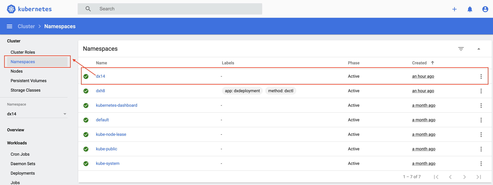
kubectl get namespaces
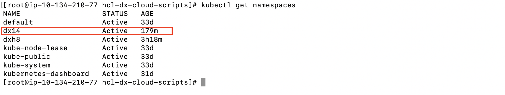
Service Account
Service Accounts for the operator and ambassador deployments.
kubectl get serviceaccounts -n dx14
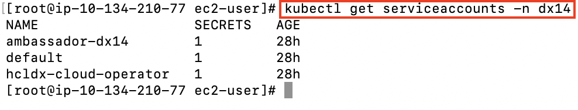
Role
A Role that defines the access required by the operator.
kubectl get role -n dx14
For more detailed information, use the describe command.
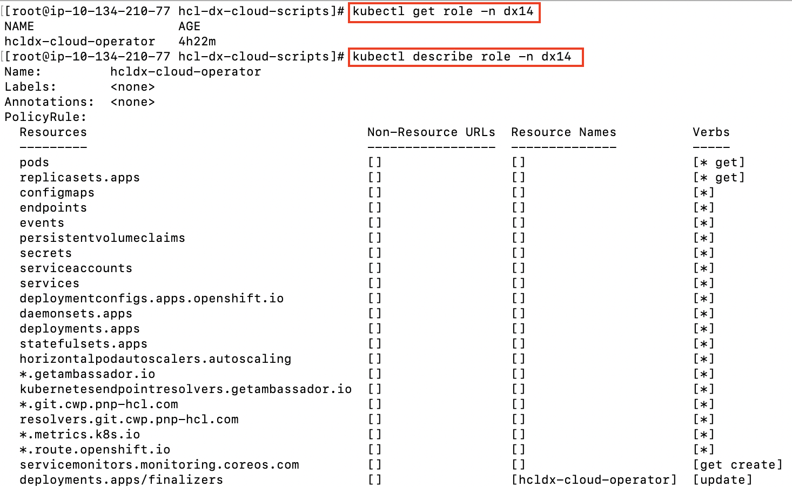
Role Binding
A Role Binding that binds the operator service account to the operator role.
kubectl describe rolebinding -n dx14
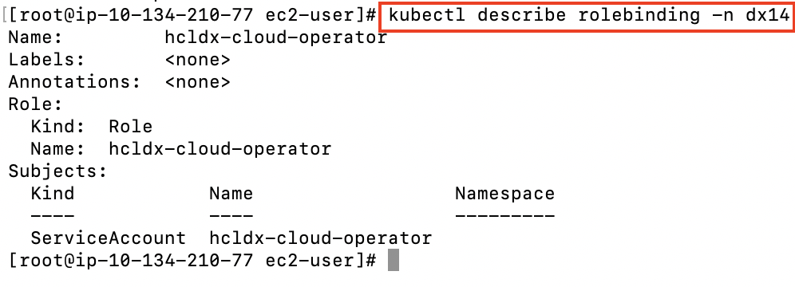
Deployment
A Deployment that defines/describes the operator Replica Set.
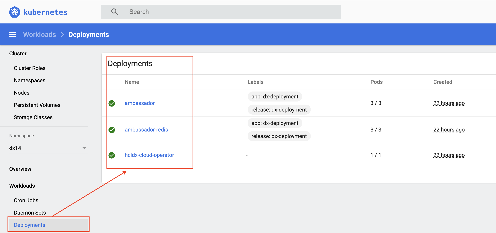
kubectl get deployment -n dx14
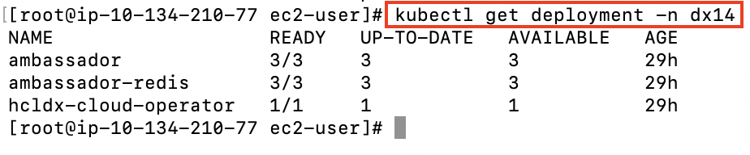
Replica Sets
Replica Sets based on the deployments of the ambassador and the operator, that maintains a stable set of replica pods.
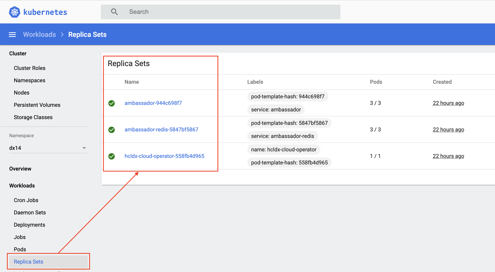
kubectl get replicaset -n dx14
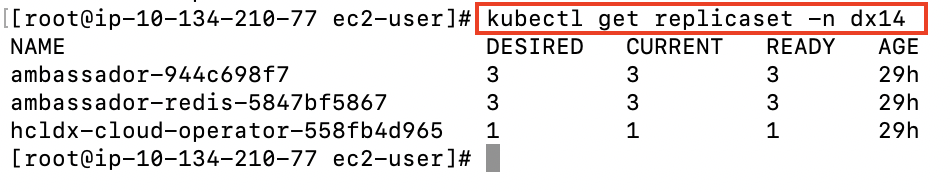
Metrics and Services
Services expose HCL Digital Experience running as part of the Stateful Set and provide metrics for the operator created.

kubectl get service -n dx14
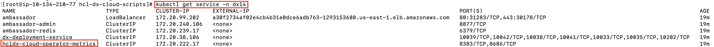
Secrets
There are several secrets that are created.

kubectl get secrets -n dx14
kubectl describe secret dx-deployment-wps -n dx14
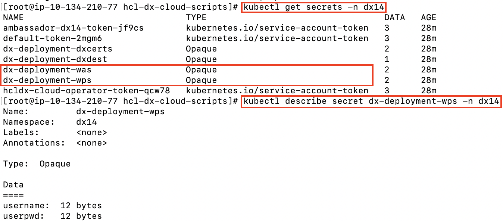
Kubernetes command to update existing secrets:
kubectl edit secret dx-deployment-wps -n dx14
Use base64 encoded values when updating secrets. Most Linux operating systems will allow you to generate base64 values with this command:
echo 'wpsadmin' | base64
Config Map
A Config Map is created to handle clustering in scenarios where multiple operators are deployed.
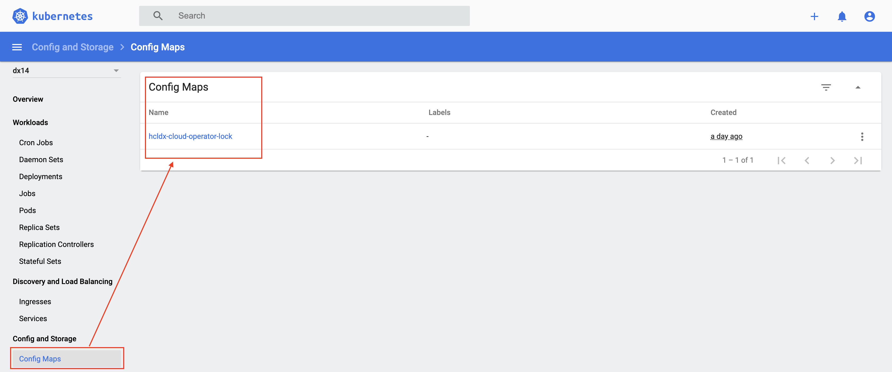
kubectl get configmap -n dx14
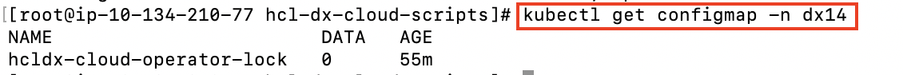
Persistent Volume Claims
One or more Persistent Volume Claims are created, one for the shared profile, and another, if configured, for the logs of each pod.
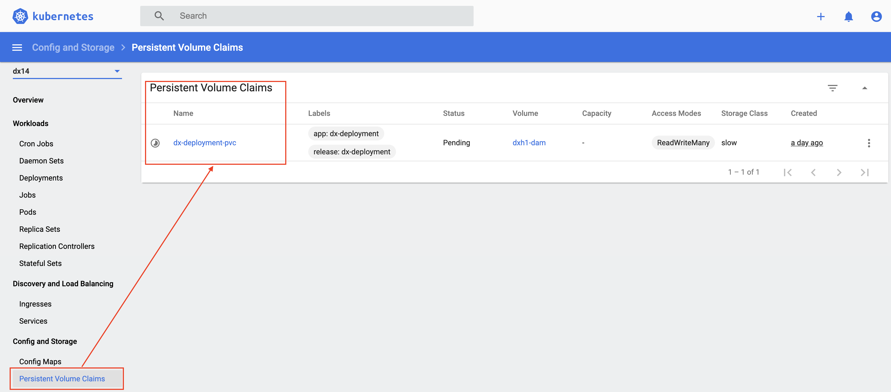
kubectl get pvc -n dx14
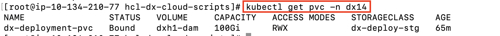
Stateful Set
A Stateful Set is created for the HCL Digital Experience core. A Stateful Set manages pods that are based on an identical container specification.
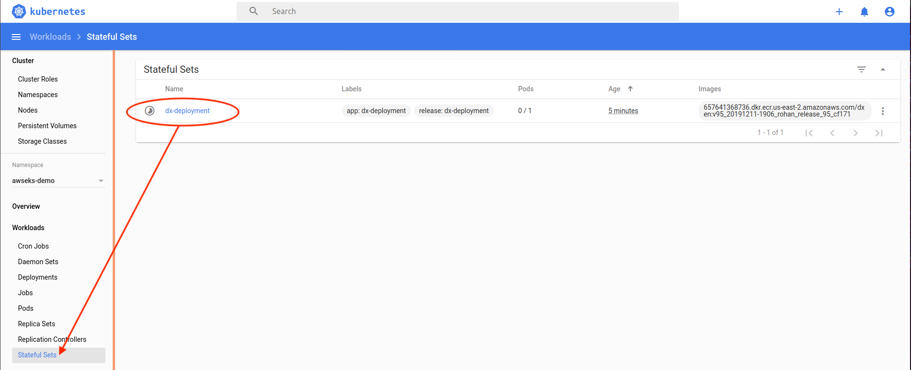
kubectl get statefulset -n dx14
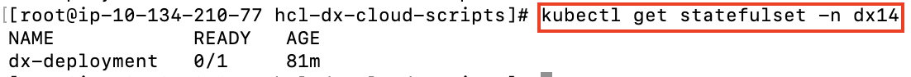
Pods
Pods are part of the Stateful Set, running HCL Portal.
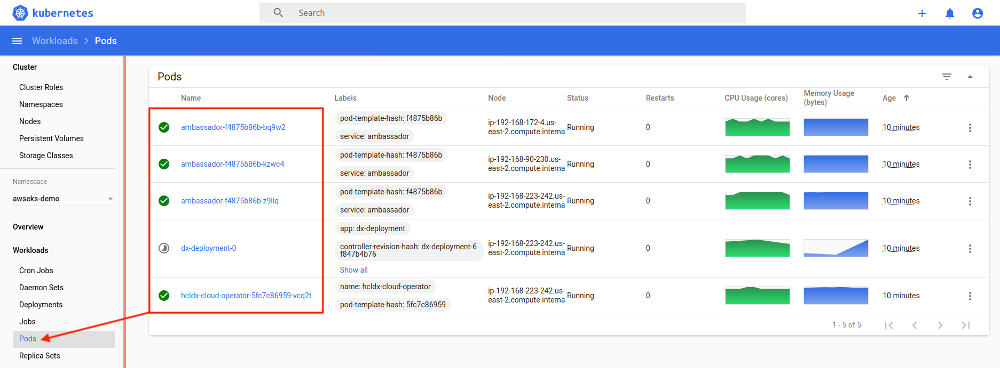
kubectl get pods -l app=dx-deployment -n dx14' (limits to pods in the StatefulSetSpec)
kubectl get pods -n dx14
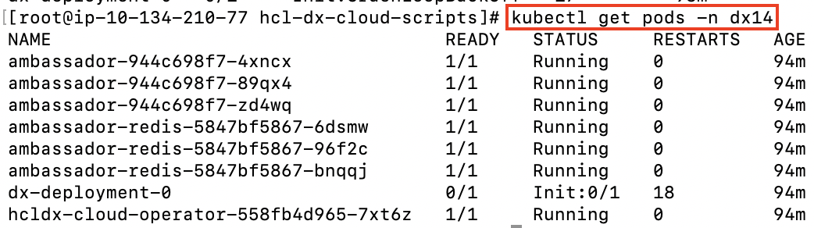
Ambassador
To expose the DX server, HCL is leveraging Ambassador. Ambassador is deployed and configured by default. There are many artifacts included.
- Custom resources that help define Ambassador:
AuthService,ConsulResolver,KubernetesEndpointResolver,KubernetesServiceResolver,Mapping,Module,RateLimitService,TCPMapping,TLSContext,TracingService. - Ambassador deployment
- Ambassador replica set
- Ambassador pods (by default, 3)
- Ambassador service and Ambassador admin service
-
An instance of TLS context
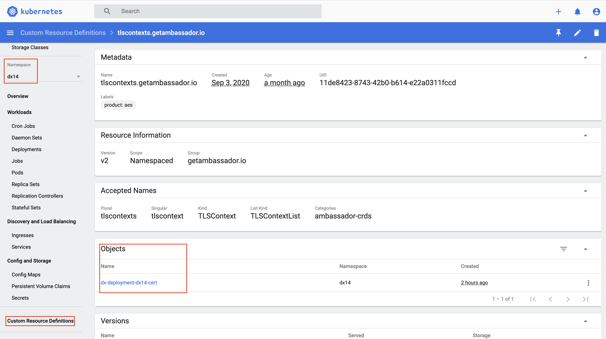
kubectl describe TLSContext -n dx14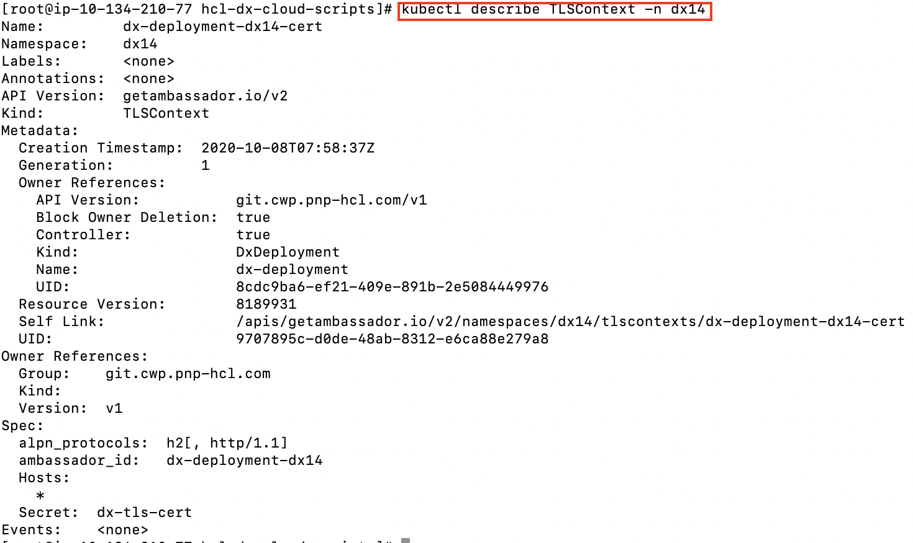
Mapping
An instance of Mapping for each target: DX Home Secure, WAS Home Secure, etc.
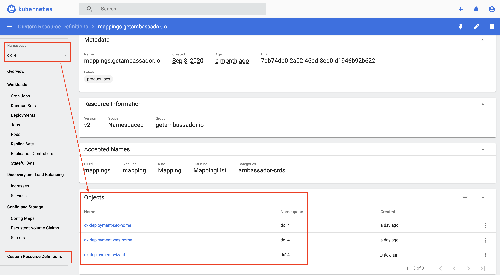
kubectl get mapping -n dx14

Extras
There are several files created for each deployment. It is recommended to keep these files.
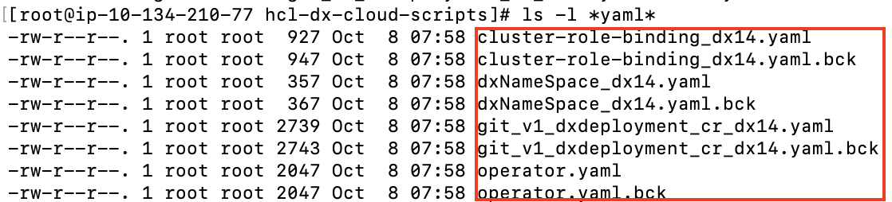
- File 1
dxNameSpace_NAMESPACE.yamlcan be used to delete thenamespace/projectif needed. - File 2
git_v1_dxdeployment_cr_NAMESPACE.yamlis a representation of the last deployed deployment for the givennamespace/project.
Note: With multiple instances of Digital Experience 9.5 containers writing to a shared Transaction log (tranlog) directory, there is a possibility of data corruption which could lead to DX server startup issues. To avoid this possibility, beginning with CF192, for each DX 9.5 instance the deployment creates an additional dynamic Persistent Volume (pv) and Persistent Volume Claim (pvc) to contain the tranlog data of the individual instances.
Parent topic:Deploy DX Container to Amazon EKS